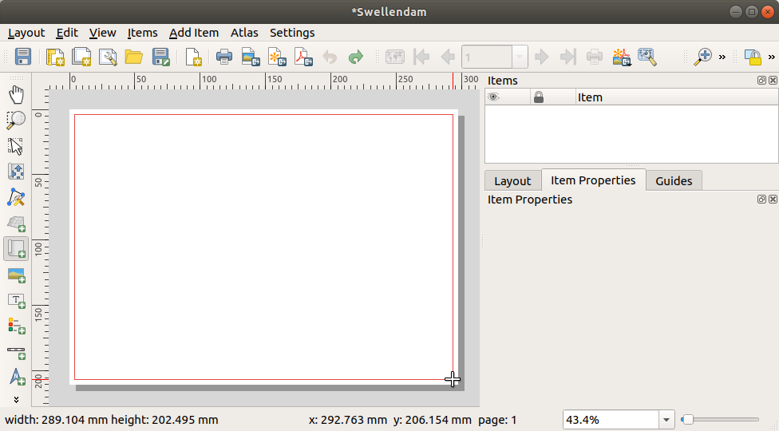
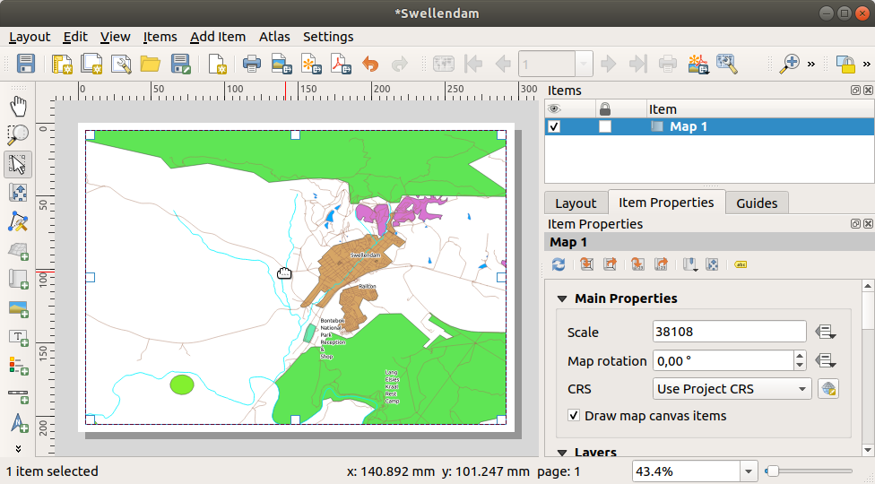
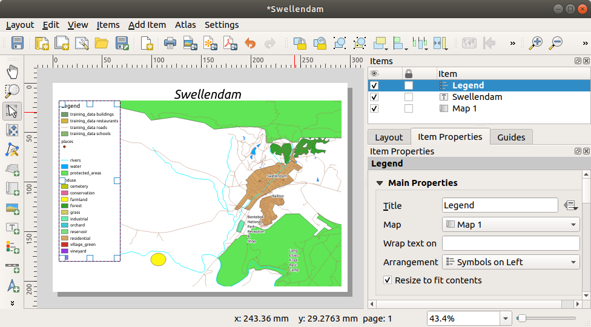

4.1. သင်ခန်းစာ- ပုံထုတ်အပြင်အဆင်ကို အသုံးပြုခြင်း (Lesson: Using Print Layout)
ယခု သင့်တွင် မြေပုံတစ်ခုရှိနေပြီဖြစ်ပြီး ထိုမြေပုံကို ပရင့်ထုတ်ရန် သို့မဟုတ် စာရွက်စာတမ်းတစ်ခုအဖြစ် export ထုတ်ရန်လိုအပ်လာမည်ဖြစ်သည်။ အကြောင်းမှာ GIS မြေပုံဖိုင် တစ်ခုသည် ဓာတ်ပုံတစ်ခုမဟုတ်ပါ။ GIS ပရိုဂရမ်၏ အခြေအနေကို သိမ်းဆည်းထားခြင်းဖြစ်ပြီး သုံးထားသော layer များအားလုံး၊ သက်ဆိုင်ရာ အညွှန်းများ၊ အရောင်များ စသည်တို့ပါဝင်ပါသည်။ QGIS ကဲ့သို့ GIS ပရိုဂရမ် သို့မဟုတ် data မရှိသူများအတွက်ဆိုလျှင် မြေပုံဖိုင်သည် အသုံးဝင်မည်မဟုတ်ပါ။ မြေပုံဖိုင်တစ်ခုကို လူတိုင်း၏ကွန်ပျူတာထဲတွင် ဖတ်ရှုနိုင်ရုံသာမက ပရင့်ထုတ်နိုင်သော format တစ်ခုအဖြစ်သို့ QGIS တွင်ထုတ်ယူနိုင်ပါသည်။ Export ထုတ်ခြင်းနှင့် ပရင့်ထုတ်ခြင်း နှစ်ခုစလုံးကို Print Layout မှတဆင့် ကိုင်တွယ်လုပ်ဆောင်ရပါသည်။
ဤသင်ခန်းစာအတွက် ရည်မှန်းချက်- လိုအပ်သော setting များပါဝင်သော အခြေခံမြေပုံတစ်ခုကို ဖန်တီးရန် QGIS Print Layout ကို အသုံးပြုတတ်စေရန်
4.1.1. ★☆☆ လိုက်လုပ်ကြည့်ပါ- Layout Manager (Follow Along: The Layout Manager)
QGIS တွင် မြေပုံဖိုင်တစ်ခုထဲကို အသုံးပြုပြီး မြေပုံမြောက်များစွာကို ဖန်တီးနိုင်ပါသည်။ ထို့အတွက်ကြောင့် Layout Manager ဟုခေါ်သော tool တစ်ခုပါရှိပါသည်။
ထို tool ကိုဖွင့်ရန်အတွက် menu ကိုနှိပ်ပါ။ Layout manager dialog အလွတ်တစ်ခုပေါ်လာပါလိမ့်မည်။

New from Template အောက်တွင် Empty layout ကိုရွေးချယ်ပြီး Create… ခလုတ်ကိုနှိပ်ပါ။
Layout အသစ်၏အမည်ကို Swellendam ဟုပေးပြီး OK ကိုနှိပ်ပါ။
Print Layout window ကိုတွေ့ရပါလိမ့်မည်-

menu မှတဆင့်လည်း layout အသစ်တစ်ခုကို ဖန်တီးနိုင်ပါသည်။
မည်သည့်လမ်းကြောင်းမှဖန်တီးသည်ဖြစ်စေ print layout အသစ်သည် ပုံတွင်ပြထားသည့်အတိုင်း menu တွင်မြင်တွေ့ရမည်ဖြစ်သည်။

4.1.2. ★☆☆ လိုက်လုပ်ကြည့်ပါ- အခြေခံမြေပုံဖွဲ့စည်းမှု (Follow Along: Basic Map Composition)
ဤဥပမာတွင် ဖွဲ့စည်းမှုသည် လိုချင်သည့်အတိုင်း ဖြစ်နေပြီးသားဖြစ်သည်။ သင့်မြေပုံတွင် ထိုအတိုင်းဖြစ်အောင် လုပ်ဆောင်ပါ။
Layout window ၏အလယ်ရှိ sheet ပေါ်တွင် right-click နှိပ်ပြီး Page properties… ကိုရွေးချယ်ပါ။
Item Properties tab ထဲရှိ တန်ဖိုးများကို အောက်ပါအတိုင်း သတ်မှတ်ပါ-
Size:
A4Orientation:
Landscape
သင်လိုချင်သည့်ပုံစံအတိုင်း page layout ကိုရပြီဖြစ်သည်၊ သို့သော် စာမျက်နှာသည် အလွတ်ဖြစ်နေပြီး မြေပုံမရှိသေးပါ။
-
ဤ tool ကို activate လုပ်ပြီး စာမျက်နှာပေါ်တွင် မြေပုံတစ်ခုကို နေရာချထားနိုင်ပါလိမ့်မည်။
စာမျက်နှာအလွတ်ပေါ်တွင် လေးထောင့်ကွက် (box) တစ်ခုကို click နှိပ်ပြီးဖိဆွဲပါ-
 မြေပုံသည် စာမျက်နှာပေါ်တွင် ပေါ်လာပါလိမ့်မည်။
မြေပုံကို click နှိပ်ပြီး ဖိဆွဲကာ ရွှေ့ပါ-
 လေးထောင့်ကွက် အနားအစွန်းများကို click နှိပ်ပြီး ဖိဆွဲခြင်းဖြင့် မြေပုံအရွယ်အစားကို ချိန်ညှိပါ-

Note
သင့်မြေပုံကို မြင်ရသည့်ပုံစံသည် ကွဲပြားနေနိုင်ပါသည်။ ကိုယ်ပိုင် project ကို မည်သို့ပြင်ဆင်သတ်မှတ်ထားသည်ပေါ် မူတည်သောကြောင့်ဖြစ်သည်။ သို့သော် စိုးရိမ်စရာမရှိပါ။ ညွှန်ကြားချက်များသည် ယေဘုယျသာဖြစ်ပြီး မြေပုံသည်မည်သို့ပုံစံဖြစ်နေနေ အလုပ်လုပ်ပုံအတူတူပင်ဖြစ်သည်။
အစွန်းများတလျှောက်တွင် စာမျက်နှာဘေးကွက်လပ်နေရာများ (margin) ချန်ထားပြီး ခေါင်းစဉ်အတွက် အပေါ်တွင် နေရာလွတ်ချိန်ထားခဲ့ပါ။
အောက်ပါခလုတ်များအသုံးပြုပြီး စာမျက်နှာကို zoom အချုံ့/အချဲ့ ပြုလုပ်ပါ (မြေပုံကိုမဟုတ်ပါ)-


အဓိက QGIS window ထဲတွင် မြေပုံကို zoom ချဲ့ပြီး မြင်ကွင်းနေရာရွှေ့ (pan) ကြည့်ပါ။
 Move item content tool ကိုအသုံးပြုပြီးလည်း မြင်ကွင်းနေရာရွှေ့နိုင်ပါသည်။
Move item content tool ကိုအသုံးပြုပြီးလည်း မြင်ကွင်းနေရာရွှေ့နိုင်ပါသည်။Zoom အချုံ့/အချဲ့ပြုလုပ်သည့်အတိုင်း မြေပုံမြင်ကွင်း သည် ပြောင်းလဲနေသွားမည်ဖြစ်သည်။
မြေပုံမြင်ကွင်းသည် အကြောင်းတစ်ခုခုကြောင့် လိုက်လံပြောင်းလဲခြင်းမရှိပါက
 Refresh view ခလုတ်ကိုနှိပ်ပြီး မြေပုံကို refresh ပြုလုပ်နိုင်ပါသည်။
Refresh view ခလုတ်ကိုနှိပ်ပြီး မြေပုံကို refresh ပြုလုပ်နိုင်ပါသည်။မြေပုံတွင် သတ်မှတ်ထားသော အရွယ်အစားနှင့်နေရာချထားသည် နောက်ဆုံးအပြီးသပ်ဖြစ်ရန်မလိုပါ။ သင်စိတ်တိုင်းမကျလျှင် နောက်ပိုင်းမှ ပြင်ဆင်ပြောင်းလဲနိုင်ပါသည်။ ယခုအတွက်တော့ မြေပုံပေါ်တွင် လုပ်ဆောင်ထားမှုများကို သိမ်းဆည်းရန်လိုအပ်ပါသည်၊ အကြောင်းမှာ QGIS ထဲရှိ Print Layout တစ်ခုသည် အဓိက မြေပုံဖိုင်၏ တစ်စိတ်တပိုင်းဖြစ်ပြီး project ကိုသိမ်းဆည်းထားရပါမည်။
 ကိုနှိပ်ပါ။ ၎င်းသည် လွယ်ကူသော ဖြတ်လမ်းနည်း (shortcut) တစ်ခုဖြစ်ပါသည်။
ကိုနှိပ်ပါ။ ၎င်းသည် လွယ်ကူသော ဖြတ်လမ်းနည်း (shortcut) တစ်ခုဖြစ်ပါသည်။
4.1.3. ★☆☆ လိုက်လုပ်ကြည့်ပါ- ခေါင်းစဉ်တစ်ခုထည့်သွင်းခြင်း (Follow Along: Adding a Title)
ယခုဆိုလျှင် မြေပုံသည် စာမျက်နှာပေါ်တွင် ကြည့်ရအဆင်ပြေနေပြီဖြစ်သည်၊ သို့သော် မြေပုံဖတ်ရှုသူများ/အသုံးပြုသူများကို မည်သည့်အကြောင်းအရာဖြစ်ပျက်နေသည်ကို ပြောပြထားခြင်းမရှိသေးပါ။ မြေပုံ element များထည့်သွင်းပြီး အကြောင်းအရာကိုပြောပြရန်လိုအပ်ပါသည်။ ဦးစွာ ခေါင်းစဉ်တစ်ခု ထည့်ကြည့်ပါမည်။
 Add Label ခလုတ်ကိုနှိပ်ပါ။
Add Label ခလုတ်ကိုနှိပ်ပါ။မြေပုံအပေါ်ဘက် စာမျက်နှာပေါ်တွင် click နှိပ်ပြီး New Item Properties dialog ထဲရှိ အကြံပြုပေးထားသော တန်ဖိုးများအတိုင်းထားပါက မြေပုံ၏အပေါ်တွင် အညွှန်းစာသားတစ်ခုပေါ်လာလိမ့်မည်။
၎င်းကို အရွယ်အစားချိန်ညှိပြီး စာမျက်နှာ၏ အပေါ်အလယ်တွင် နေရာချထားပါ။ မြေပုံကို အရွယ်အစားချိန်ညှိပြီး နေရာရွှေ့သည့် နည်းလမ်းအတိုင်း ၎င်းကိုလည်း အရွယ်အစားချိန်ညှိပြီး နေရာရွှေ့နိုင်ပါသည်။
ခေါင်းစဉ်ကို ရွှေ့လိုက်တိုင်းတွင် စာမျက်နှာအလယ်၌ ခေါင်းစဉ်နေရာချရာတွင် လွယ်ကူစေရန် guideline (မျဉ်း) များပေါ်လာပါလိမ့်မည်။
သို့သော် Actions Toolbar ထဲတွင် မြေပုံ (စာမျက်နှာမဟုတ်) ပေါ်မူတည်ပြီး ခေါင်းစဉ်နေရာချထားပေးနိုင်သည့် tool တစ်ခုလည်းရှိပါသည်-

၎င်းကိုရွေးချယ်ရန် မြေပုံကို click နှိပ်ပါ။
မြေပုံနှင့် label နှစ်ခုစလုံးကို ရွေးချယ်ရန်အတွက် Shift ကီးကို ဖိထားပြီး label ပေါ်တွင် click နှိပ်ပါ။
- Align selected items left ခလုတ်ကိုရှာပြီး နေရာချထားမှုရွေးချယ်စရာများကို ကြည့်ရန် ၎င်းခလုတ်ဘေးရှိ dropdown မြားကို နှိပ်ပါ၊ ထို့နောက်
 Align center ကိုနှိပ်ပါ-
Align center ကိုနှိပ်ပါ-
Label ဘောင်သည် မြေပုံ၏အလယ်တွင် ရှိနေပြီဖြစ်သော်လည်း အကြောင်းအရာများ အလယ်တွင်ရှိမနေသေးပါ။ အညွှန်း၏ အကြောင်းအရာများကို အလယ်တွင်ထားရန်-
Label ကို click နှိပ်ပါ။
Layout window ၏ ဘေးဘက် panel ထဲရှိ Item Properties tab ကို click နှိပ်ပါ။
Label ၏စာသားကို “Swellendam” ဟုပြောင်းပါ-

Appearance အောက်တွင် စာလုံးဖောင့်နှင့် ညီညာအောင်ညှိခြင်းဆိုင်ရာ (alignment) ရွေးချယ်စရာများကို သတ်မှတ်ရန် ဤ interface ကိုအသုံးပြုပါ-
သင့်တော်သော စာလုံးဖောင့် အကြီးတစ်ခုကို ရွေးချယ်ပါ (နမူနာတွင် အရွယ်အစား
36ရှိသော default စာလုံးဖောင့်ကိုအသုံးပြုပါလိမ့်မည်)Horizontal Alignment တွင် Center ကိုရွေးပါ။
စာလုံးဖောင့်အရောင်ကိုလည်း ပြောင်းလဲနိုင်ပါသည်၊ သို့သော် default အတိုင်း အနက်ရောင် ထားခြင်းသည် ပိုကောင်းပါသည်။
Default setting သည် ခေါင်းစဉ်၏ စာသား box ထဲသို့ frame (ဘောင်) တစ်ခုထည့်သွင်းရန်မဟုတ်ပါ။ သို့သော် frame တစ်ခုထည့်သွင်းချင်ပါက-
Item Properties tab ထဲတွင် Frame option ကိုတွေ့ရသည်အထိ မောက်စ်ကို scroll လုပ်ပါ။
Frame ကိုဖွင့်ရန်အတွက် Frame checkbox ကို click နှိပ်ပါ။ Frame ၏ အရောင်နှင့်အကျယ်ကိုလည်း ပြောင်းလဲနိုင်ပါသည်။
ဤဥပမာတွင် frame ကိုမဖွင့်ထားပါ၊ ထို့ကြောင့် စာမျက်နှာသည် အောက်ပါအတိုင်းဖြစ်နေပါဦးမည်-

အဆိုပါ element များကို မတော်တဆ ရွှေ့မိခြင်းမဖြစ်စေရန် item နေရာများကို lock ပြုလုပ်ထားနိုင်ပါသည်-

{kind=link}
{kind=link}
4.1.4. ★☆☆ လိုက်လုပ်ကြည့်ပါ- ရည်ညွှန်းချက် တစ်ခုထည့်သွင်းခြင်း (Follow Along: Adding a Legend)
မြေပုံဖတ်ရှုသူအနေဖြင့် မြေပုံပေါ်ရှိအရာများသည် မည်သည့်အရာကိုဆိုလိုသည်ကို မြင်ရရန်လည်း လိုအပ်ပါသည်။ နေရာနာမည်များကဲ့သို့ အချို့ကိစ္စများတွင် သိသာနိုင်ပါသည်။ တောများ၏အရောင်များကဲ့သို့ ကိစ္စများတွင် ခန့်မှန်းရန် ပိုမိုခက်ခဲပါသည်။ Legend (ရည်ညွှန်းချက်) တစ်ခုထည့်သွင်းကြည့်ပါမည်။
Legend ကို နေရာချထားရန် စာမျက်နှာပေါ်တွင် click နှိပ်ပါ၊ New Item Properties dialog ထဲတွင် ပေးထားသောတန်ဖိုးများအတိုင်းထားပါ။
Layout စာမျက်နှာထဲတွင် အဓိက dialog ထဲရှိ layer များ၏ သင်္ကေတများကို ပြသနေသော legend တစ်ခုကို ထည့်သွင်းပြီးဖြစ်ပါသည်။
ခါတိုင်းလိုပင် item ကို click နှိပ်ပြီး ရွှေ့လိုသည့်နေရာသို့ ရွှေ့နိုင်ပါသည်-

{kind=link}
{kind=link}
4.1.5. ★★☆ လိုက်လုပ်ကြည့်ပါ- Legend Item များကို စိတ်ကြိုက်ပြင်ဆင်ခြင်း (Follow Along: Customizing Legend Items)
Legend ပေါ်ရှိ အရာအားလုံး မဖြစ်မနေမလိုအပ်ပါ၊ ထို့ကြောင့် အချို့မလိုအပ်သော item များကို ဖယ်ရှားပါမည်။
Item Properties tab ထဲတွင် Legend items အုပ်စုကို ရှာတွေ့ပါလိမ့်မည်
 Auto update ကို အမှန်ခြစ်ဖြုတ်ထားပါက legend item များကို တိုက်ရိုက် မွမ်းမံပြင်ဆင်နိုင်မည်ဖြစ်သည်
Auto update ကို အမှန်ခြစ်ဖြုတ်ထားပါက legend item များကို တိုက်ရိုက် မွမ်းမံပြင်ဆင်နိုင်မည်ဖြစ်သည်buildings အမည်ဖြင့်တစ်ခုကို select လုပ်ပါ
၎င်းကို legend မှ ဖျက်ပစ်ရန်
 ခလုတ်ကိုနှိပ်ပါ
ခလုတ်ကိုနှိပ်ပါ
Item များကိုလည်း အမည်ပြန်ပြောင်းပေးနိုင်ပါသည်။
ထိုစာရင်းထဲမှ layer တစ်ခုကို select လုပ်ပါ။
 Edit selected item properties ခလုတ်ကိုနှိပ်ပါ။
Edit selected item properties ခလုတ်ကိုနှိပ်ပါ။Layer များကို
Places၊Roads and Streets၊Surface Waterနှင့်Riversဟု အမည်ပြန်ပြောင်းပေးပါ။
Item များ၏ အထက်အောက် အစဉ် (order) ကိုလည်း ပြန်စဉ်နိုင်ပါသည်-

Legend သည် layer အမည်အသစ်များအတိုင်း လိုက်ကျယ်သွားမည်ဖြစ်သောကြောင့် legend သို့မဟုတ် မြေပုံကို ရွှေ့ပြီး အရွယ်အစားပြန်ပြောင်းလိုက ပြောင်းနိုင်ပါသည်။ ရလာဒ်သည် အောက်ပါအတိုင်းဖြစ်သည်-

4.1.6. ★☆☆ လိုက်လုပ်ကြည့်ပါ- မြေပုံကို export ထုတ်ခြင်း (Follow Along: Exporting Your Map)
Note
သင့်အလုပ်ကို မကြာမကြာ သိမ်းဆည်းရန် သတိရပါသလား။
နောက်ဆုံးတွင် မြေပုံကို export ထုတ်ရန် အဆင်သင့်ဖြစ်နေပါပြီ။ Layout window ၏ ဘယ်ဘက်အပေါ်ထောင့်နားတွင် export ခလုတ်များကို တွေ့ရမည်ဖြစ်သည်-
 Print Layout - Printer တစ်ခုဖြင့် interface များဖြစ်သည်။ မိမိအသုံးပြုမည့် Printer အမျိုးအစားပေါ်မူတည်ပြီး option များ ကွဲပြားလိမ့်မည်ဖြစ်သောကြောင့် ဤခေါင်းစဉ်နှင့်ပတ်သက်သည်များအတွက် printer manual သို့မဟုတ် printing လမ်းညွှန်ကို အကိုးအကားပြုလျှင် ပိုကောင်းပါသည်။
Print Layout - Printer တစ်ခုဖြင့် interface များဖြစ်သည်။ မိမိအသုံးပြုမည့် Printer အမျိုးအစားပေါ်မူတည်ပြီး option များ ကွဲပြားလိမ့်မည်ဖြစ်သောကြောင့် ဤခေါင်းစဉ်နှင့်ပတ်သက်သည်များအတွက် printer manual သို့မဟုတ် printing လမ်းညွှန်ကို အကိုးအကားပြုလျှင် ပိုကောင်းပါသည်။အခြားခလုတ်များသည် မြေပုံစာမျက်နှာကို ဖိုင်တစ်ခုသို့ export ထုတ်ပေးနိုင်ပါသည်။
 Export as Image - အသုံးများသော ဓာတ်ပုံ format အများအပြားကို ရွေးချယ်နိုင်ပါသည်။ အရိုးရှင်းဆုံး option ဖြစ်သော်လည်း ထွက်လာသော ဓာတ်ပုံသည် “အသေ” ဖြစ်နေပြီး edit လုပ်ရန် ခက်ခဲမည်ဖြစ်သည်။
Export as Image - အသုံးများသော ဓာတ်ပုံ format အများအပြားကို ရွေးချယ်နိုင်ပါသည်။ အရိုးရှင်းဆုံး option ဖြစ်သော်လည်း ထွက်လာသော ဓာတ်ပုံသည် “အသေ” ဖြစ်နေပြီး edit လုပ်ရန် ခက်ခဲမည်ဖြစ်သည်။ Export as SVG - မြေပုံရေးဆွဲသူတစ်ဦး (မြေပုံကို edit ပြုလုပ်ချင်သူ) ထံသို့ မြေပုံကိုပေးပို့လျှင် SVG တစ်ခုအနေဖြင့် export ထုတ်လျှင် အကောင်းဆုံးဖြစ်သည်။ SVG ဆိုသည်မှာ “Scalable Vector Graphic” ဖြစ်ပြီး Inkscape ကဲ့သို့ ပရိုဂရမ်များ သို့မဟုတ် အခြား vector ဓာတ်ပုံတည်းဖြတ်ခြင်း software များထဲသို့ ထည့်သွင်းအသုံးပြုနိုင်ပါသည်။
Export as SVG - မြေပုံရေးဆွဲသူတစ်ဦး (မြေပုံကို edit ပြုလုပ်ချင်သူ) ထံသို့ မြေပုံကိုပေးပို့လျှင် SVG တစ်ခုအနေဖြင့် export ထုတ်လျှင် အကောင်းဆုံးဖြစ်သည်။ SVG ဆိုသည်မှာ “Scalable Vector Graphic” ဖြစ်ပြီး Inkscape ကဲ့သို့ ပရိုဂရမ်များ သို့မဟုတ် အခြား vector ဓာတ်ပုံတည်းဖြတ်ခြင်း software များထဲသို့ ထည့်သွင်းအသုံးပြုနိုင်ပါသည်။ Export as PDF - အလုပ်အပ်သူ တစ်ဦးထံသို့ မြေပုံကို ပေးပို့ရန်လိုအပ်ပါက PDF ဖိုင်အနေဖြင့် အသုံးအများဆုံးဖြစ်ပါသည်။ အကြောင်းမှာ PDF အတွက် print option များကို သတ်မှတ်ရ လွယ်ကူပေးကြောင့်ဖြစ်သည်။ အချို့ မြေပုံရေးဆွဲသူများသည် PDF format ကို ထည့်သွင်းပြီး edit လုပ်နိုင်သည့် ပရိုဂရမ်ရှိလျှင် PDF format ကိုလည်း သဘောကျကြပါသည်၊
Export as PDF - အလုပ်အပ်သူ တစ်ဦးထံသို့ မြေပုံကို ပေးပို့ရန်လိုအပ်ပါက PDF ဖိုင်အနေဖြင့် အသုံးအများဆုံးဖြစ်ပါသည်။ အကြောင်းမှာ PDF အတွက် print option များကို သတ်မှတ်ရ လွယ်ကူပေးကြောင့်ဖြစ်သည်။ အချို့ မြေပုံရေးဆွဲသူများသည် PDF format ကို ထည့်သွင်းပြီး edit လုပ်နိုင်သည့် ပရိုဂရမ်ရှိလျှင် PDF format ကိုလည်း သဘောကျကြပါသည်၊
ယခုအတွက် PDF ကိုအသုံးပြုပါမည်။
- Export as PDF ခလုတ်ကိုနှိပ်ပါ
ဖိုင်သိမ်းဆည်းမည့် နေရာကိုရွေးချယ်ပြီး ဖိုင်အမည်ပေးပါ။ အောက်ပါ dialog ပေါ်လာမည်ဖြစ်သည်။

Default တန်ဖိုးများကို စိတ်ချလက်ချအသုံးပြုနိုင်ပြီး Save ကိုနှိပ်ပါ။
QGIS သည် မြေပုံ export ထုတ်ရန် လုပ်ဆောင်ပေးမည်ဖြစ်ပြီး ပြီးဆုံးပါက print layout dialog ၏ထိပ်တွင် စာတို တစ်ခုကို ဖော်ပြပေးပါသည်။
PDF ဖိုင်သိမ်းဆည်းထားသော folder ကို ဖွင့်ရန်အတွက် စာတိုထဲရှိ hyperlink ကိုနှိပ်ပါ။
၎င်းကိုဖွင့်ကြည့်ပြီး သင့် layout ၏ပုံစံကို ကြည့်ကြည့်ပါ။
တစ်ခုခုစိတ်တိုင်းမကျသည်များရှိလျှင် QGIS window သို့ပြန်သွားပြီး မွမ်းမံပြင်ဆင်မှုများပြုလုပ်ကာ export ထပ်ထုတ်ပါ။
Project ဖိုင်ကို သိမ်းဆည်းရန် မမေ့ပါနှင့်။
4.1.7. နိဂုံးချုပ် (In Conclusion)
ယခုဆိုလျှင် သင့်အနေဖြင့် အခြေခံ မြေပုံ layout တစ်ခု ဖန်တီးခြင်းနည်းလမ်းကို သိရှိပြီးဖြစ်ပါသည်။ နောက်တစ်ဆင့်ကို ဆက်သွားနိုင်ပြီဖြစ်ပြီး layout item များပိုမိုပါဝင်သော ပြောင်းလဲလုပ်ဆောင်နိုင်သည့် မြေပုံ layout တစ်ခုကို ဖန်တီးနိုင်ပြီဖြစ်သည်။